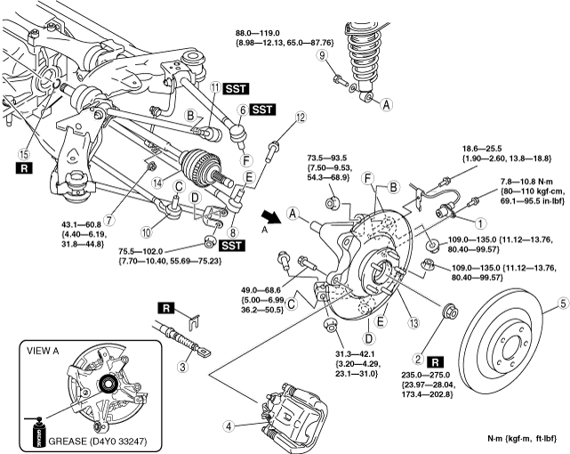
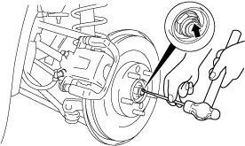
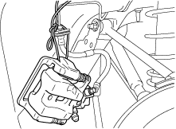
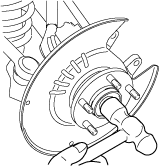
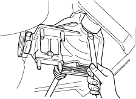
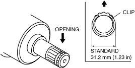
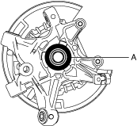
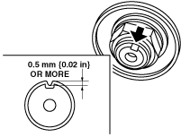

Workshop Manual ➭ DRIVELINE/AXLE ➭ DRIVE SHAFT ➭ REAR DRIVE SHAFT REMOVAL/INSTALLATION
REAR DRIVE SHAFT REMOVAL/INSTALLATION
id031300800600
Caution• Performing the following procedures without first removing the ABS wheel-speed sensor may possibly cause an open circuit in the wiring harness if it is pulled by mistake. Before performing the following procedures, remove the ABS wheel-speed sensor (axle side) and fix it to an appropriate place where the sensor will not be pulled by mistake while servicing the vehicle.
1. Drain the rear differential oil.
2. Remove in the order indicated in the table.
3. Install in the reverse order of removal.
4. Add rear differential oil. (See DIFFERENTIAL OIL REPLACEMENT.)
|
 amxuuw00001880 |
|
1 |
ABS wheel-speed sensor |
|---|---|
|
2 |
Locknut (See Locknut Removal Note.) (See Locknut Installation Note.) |
|
3 |
Parking brake cable |
|
4 |
Brake caliper component (See Brake Caliper Component Removal Note.) |
|
5 |
Disc plate (See REAR BRAKE (DISC) REMOVAL/INSTALLATION.) |
|
6 |
Rear lateral link (upper) ball joint (See REAR LATERAL LINK (UPPER) REMOVAL/INSTALLATION.) |
|
7 |
Stabilizer control link (lower) (See REAR STABILIZER REMOVAL/INSTALLATION.) |
|
8 |
Rear lateral link (lower) ball joint (See REAR LATERAL LINK (LOWER) REMOVAL/INSTALLATION.) |
|
9 |
Shock absorber bolt (lower) |
|
10 |
Toe control link ball joint |
|
11 |
Rear trailing link (upper) ball joint (See REAR TRAILING LINK (UPPER) REMOVAL/INSTALLATION.) |
|
12 |
Rear trailing link (lower) outside bolt |
|
13 |
Rear knuckle component (See Rear Knuckle Component Installation Note.) |
|
14 |
Rear drive shaft (See Rear Drive Shaft Removal Note.) (See Rear Drive Shaft Installation Note.) |
|
15 |
Clip (See Clip Installation Note.) |
1. Lock the disc plate by applying the brakes.
2. Knock the crimped portion of the locknut outward using a chisel and a hammer.
|
 amxzzw00002418 |
3. Remove the locknut.
Brake Caliper Component Removal Note
1. Suspend the brake calliper component using a cable or equivalent.
|
 amxzzw00002419 |
2. Temporarily tighten the wheel nut to prevent the disc plate from falling off.
1. Temporarily install a spare nut to the end of the rear drive shaft.
2. Knock the nut with copper hammer lightly and remove the rear drive shaft from the wheel hub.
|
 amxzzw00002420 |
3. Separate the rear drive shaft from the wheel hub.
4. Insert a tire lever or equivalent between the rear differential and differential side outer ring, and then remove the rear drive shaft.
|
 amxzzw00002421 |
Caution• The sharp edges of the drive shaft can slice or puncture the oil seal. Be careful not to damage the oil seal when removing the drive shaft from the differential.
5. Pull the rear drive shaft to the outer side of the vehicle and disconnect it from the rear differential.
6. To hold the rear knuckle component, install the rear lateral link (upper) to the rear knuckle temporarily after disconnecting the rear drive shaft.
1. Point the opening of the new drive shaft clip upward, install it to the clip groove at the end of the rear drive shaft with the installation width within the specification.
|
 amxzzw00002422 |
Standard
31.2 mm {1.23 in}
2. After installing the clip, measure the outer diameter. If it exceeds the specification, reinstall the new clip.
Rear Drive Shaft Installation Note
1. Apply differential oil to the differential oil seal lip.
Caution• The sharp edges of the rear drive shaft can slice or puncture the oil seal. Be careful not to damage the oil seal when installing the rear drive shaft from the rear differential.
2. Insert the rear drive shaft into the rear differential with the clip opening facing upward.
3. After installation, verify that the rear drive shaft is securely held by the clip by pulling the outer ring on the differential side towards the axle.
Rear Knuckle Component Installation Note
1. Apply grease (D4Y0 33247) to the wheel bearing inner race and drive shaft contact surface (Area A in figure).
|
 ardjjw00002360 |
2. Install the rear knuckle component.
1. Tighten a new locknut.
2. Crimp the locknut, using a chisel and hammer.
|
 chu0312w002 |